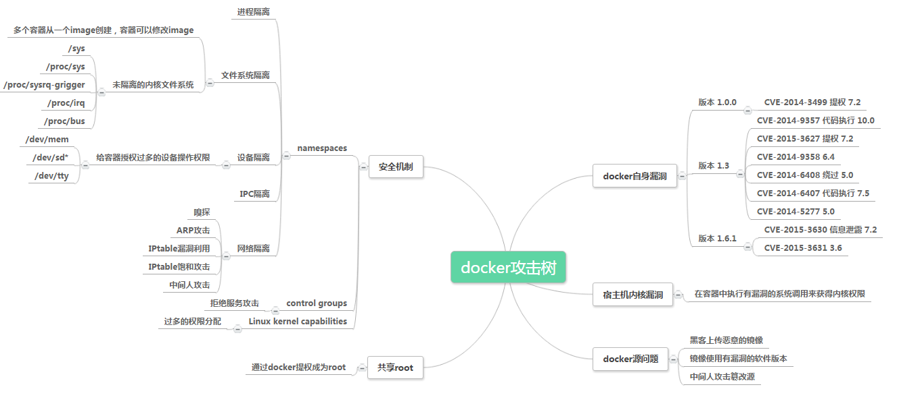

Docker
Docker is one of the most representative container platforms at present, with the advantages of continuous deployment and testing, cross-cloud platform support, etc. In a container cloud environment based on container orchestration tools such as Kubernetes, by scheduling cross-host cluster resources, the container cloud can provide functions such as resource sharing and isolation, container orchestration and deployment, and application support.
Basic concepts
Docker has three basic concepts: Image, Container, and Repository. Mirror is a read-only template consisting of a set of file systems through Union FS technology.
Mirror is a static definition, and the container is a running instance created from the mirror. The essence of a container is a process that has its own independent namespace.
Repository is a place where mirror files are centrally stored, used to store and distribute mirrors.
Containers can be started, started, stopped, and deleted. Each container is isolated from each other. The container can be regarded as a simple version of Linux environment (including root user permissions, process space, user space, and network space, etc.) and run. The application in it.
composition
The Docker engine consists of the following main components: Docker client (Docker Client), Docker daemon (Docker daemon), containerd and RunC, which are collectively responsible for the creation and operation of containers.
Docker Client is to establish a communication client with Docker Daemon. Docker Client can establish communication through http/unix socket and other methods.
Docker Daemon is a container management daemon that runs on the host and accepts requests from the client as a server. Its main functions include image management, image construction, REST API, authentication, security, core network and orchestration. Docker daemon implements Docker remote API through a local IPC/Unix socket located in /var/run/docker.sock. The default non-TLS network port is 2375 and the default TLS port is 2376.
containerd is a result of container technology standardization and is used to strip container runtime from Docker Daemon. containerd’s main responsibilities are image management and container execution.
RunC is a specific implementation formulated by Docker according to the OCF standard, which realizes container startup and stop, resource isolation and other functions.
data
Docker’s data is mainly divided into persistent and non-persistent data. By default, non-persistent storage is automatically created with the same life cycle as the container. Deleting containers will also delete non-persistent data. In Linux environment, non-persistent data is default. Stored under /var/lib/docker/.
network
The Docker network architecture originates from a solution called the container network model, mainly composed of CNM, Libnetwork, and network drivers.
Security risks and security mechanisms
When considering Docker security, the following points are mainly considered
The security of the kernel itself and its support for namespaces and cgroups
The attack surface of the Docker daemon itself
“Hardened” security features of the kernel and how they interact with containers
Docker Security Baseline

Kernel namespace/namespace
Docker containers are very similar to LXC containers and have similar security features. When starting a container with docker, Docker creates a set of namespaces and control groups for the container in the background.
Namespaces provide the most direct form of isolation: processes running in containers cannot see or affect processes running in another container or host system.
Each container also has its own network stack, which means that one container does not gain privileged access to another container’s sockets or interfaces. Of course, if the host system is set accordingly, the containers can interact through their respective network interfaces. IP communication is allowed between containers if a public port is specified for the container or when a link is used.
They can ping each other, send/receive UDP packets, and establish TCP connections, but they can be restricted if needed. From a network architecture perspective, all containers on a given Docker host are located on the bridge interface. This means they are like physical machines connected through a normal Ethernet switch.
Control Group
Control groups are another key component of Linux containers, and their main function is to implement resource accounting and limitations.
Cgroup provides many useful metrics, but also helps ensure that every container has fair memory, CPU, and disk I/O; more importantly, a single container cannot reduce system performance by exhausting resources.
Therefore, although Cgroups cannot prevent one container from accessing or affecting another container’s data and processes, they are critical to defend against some denial of service attacks. They are especially important for multi-tenant platforms, such as public and private PaaS, which guarantees consistent uptime (and performance) even when certain applications start to behave incorrectly.
Daemon’s attack surface
Running containers with Docker means running a Docker daemon, which currently requires root permissions, so the daemon is a place to consider.
First, only trusted users can be allowed to control the Docker daemon. Specifically, Docker allows you to share a directory between the Docker host and the guest container; it allows you to do so without restricting access to the container. This means that a container can be started, where the /host directory will become the /directory on the host, and the container will be able to change the host file system without any restrictions.
This has strong security significance: For example, if Docker is tested through a web server to configure containers through the API, parameter checks should be done more carefully to ensure that malicious users cannot pass the parameters made, resulting in Docker creating arbitrary containers.
Daemons can also be susceptible to other inputs, such as loading images from disks with docker loads or from networks with docker pulls.
Ultimately, the Docker daemon is expected to run restricted privileges, delegate operations to well-audited child processes, each with its own (very limited) range of Linux functionality, virtual network settings, file system management, and more. That is, it is very likely that parts of the Docker engine itself will run in the container.
Capability
By default, Docker uses the Capability mechanism to enable users to restrict some root operations while running containers as root.
In most cases, containers do not require real root permissions. Therefore, Docker can run a collection with lower Capability, which means there are much less roots in the container than real roots. For example:
Denied all mount operations
Denied access to the original socket (prevent packet spoofing)
Denied access to certain file system operations such as creating new device nodes, changing the owner of the file, or modifying properties (including immutable flags)
Reject module loading
other
This means that even if the intruder obtains root permissions within the container, further attacks will be much more difficult. By default, Docker uses whitelisting instead of blacklisting, removing all non-essential features.
Seccomp
Docker uses Seccomp to limit system calls initiated by containers to the host kernel.